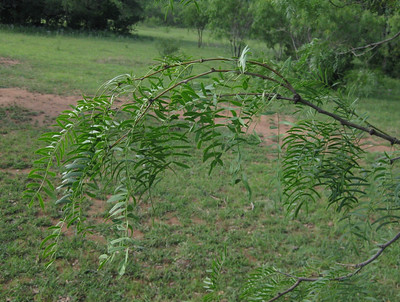

Honey Mesquite
Scientific name: Prosopis glandulosa
Abundance: plentiful
What: young leaves, seed pods, seeds
How: seed pods raw, cooked; mature beans pounded into flour, made into tofu or tea. Young leaves in salad or cooked like spinach
Where: arid fields
When: late summer, early fall
Nutritional Value: carbohydrates, protein, calcium
Other uses: excellent firewood
Dangers: up to 20% of mesquite pods are infected with very dangerous aflatoxin-producing fungus. Only pick pods that are still on the tree and have not been attacked by boring-beetles.
Honey mesquite tree.
Honey mesquite bark and spines.
Honey mesquite trees have compound leaves consisting of many leaflets.
Just-opened honey mesquite flowers.
More mature flowers transitioning into seedpods.
Young mesquite seed pods.
Pods almost mature.
Mature honey mesquite seed pod.
A mesquite pod picked from the ground. The hole indicates a beetle has infected it with dangerous aflatoxin fungus, rendering it unusable.
Dotting (or perhaps creating!) the arid regions of Texas, mesquite trees are becoming nuisance thickets. Their huge demand for water sucks the land around them dry, preventing the growth of most other plants. The dense, aromatic wood has a long history of being used to add the distinctive taste to grilled foods. This wood burns extremely hot and can destroy chimneys and melt metal fire rings so be careful with it. Historical note, the underground roots of dead mesquite trees were considered to be an excellent source of firewood.
Mesquite seeds/seed pods are rich in protein, minerals, and fructose. This fructose makes them an exceptionally good food source for diabetics as the body does not use insulin to break down the fructose. The hard, shucked beans can be dried for storage and ground into a calorie-rich flour as needed. Be warned thought that these beans are extremely hard and require a very high-quality grain mill to crush them.
The dried beans can be roasted to make a tea/caffeine-free coffee substitute. Roast them for a few minutes at 400F then crush them before boiling to make the tea.
Pods that have fallen to the ground or which have bore-holes in them have up to a 20% chance of being infected by a aflatoxin-producing fungus. However, undamaged pods still on the tree are unlikely to have this problem. Most adults are quite resistant to aflatoxin effects but small children can be at risk. Very large doses of aflatoxin can eventually cause liver cancer.